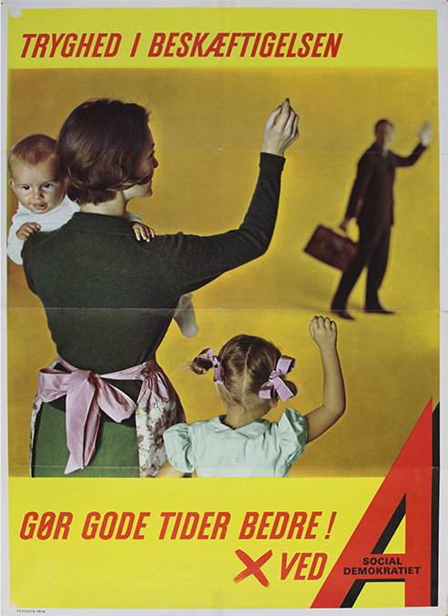

Kildeanalyse
Læs kilden og svar på hv-spørgsmålene
Hvem udtaler sig?
Vælg dit svar
Socialdemokratiet
Regeringen
Folketinget
Kernefamilien
Kvinderne
Tjek svar
Rigtige svar: 0/9 Fejl: 0
Din kildeanalyse:

Digitale læringsmaterialer Copyright 2015